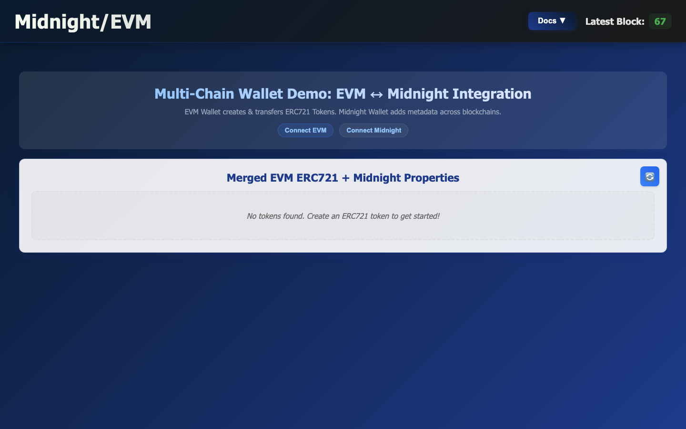
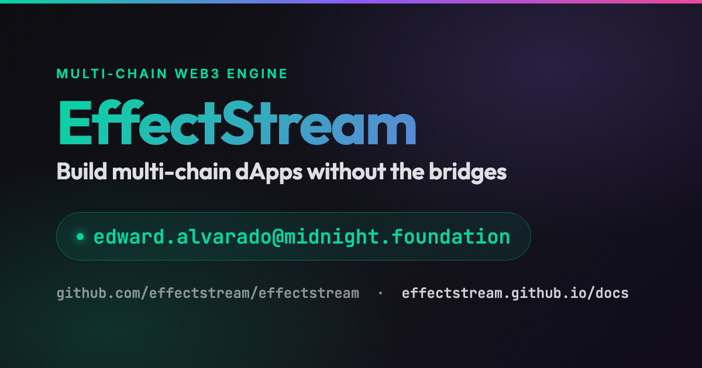

A Web3 engine for dApps, games & autonomous worlds
EVM · Midnight · Cardano · Bitcoin · Celestia · Avail · NEAR
Open source · TypeScript · one command to run a full local multi-chain stack
Context, and the problem everyone keeps hitting
A multi-chain dApp = one app that reads from many chains and folds them into one consistent state.
The short tech version
Read from many chains → fold into one deterministic state machine → query the result.
It's a sovereign rollup: inputs are ordered on-chain (data availability), your logic runs in your node, the resulting state is queryable.
Per-chain fetchers (viem for EVM, UTXORpc for Cardano, Midnight SDK, Bitcoin, Celestia…) poll finalized blocks and normalize them into one common format.
You write a typed grammar of commands + one handler each, in TypeScript. The runtime routes each input and commits SQL atomically per block.
Users sign inputs and POST them over HTTP. The batcher packs many into one on-chain tx. Storage-first — survives crashes.
Plus: complex logic runs in TypeScript (not Solidity), so game state, physics, and rich rules are finally practical.
Real apps, live today
Same logic over Arbitrum and Midnight blocks · deterministic randomness per block · play it live ▶
A fully on-chain autonomous game — the volume proof: over 1M+ transactions, gas subsidized · 4-layer rollup stack + Cardano DEX · built in GameMaker.
Atomic token swaps — offers published to Celestia (cheap DA), indexed by sync, settled privately on Midnight (ZK). An open-source template.
From git clone to a running cross-chain dApp
An ERC-721 NFT. Public ownership, standard Transfer events.
A private property added via a ZK circuit — only the owner can run it; the result is published for the app to read.
One database unifies both chains. Public token + private metadata, no bridge.
git clone https://github.com/effectstream/effectstream.git
cd effectstream/templates/evm-midnight-v2
bun i # install dependencies
bun run dev # 🚀 compiles contracts AND boots the entire local stackOne command — bun run dev — compiles the contracts and orchestrates everything below.
The orchestrator runs the whole dependency graph from that one command:
▼ waits until every dependency is ready ▼
You declare this graph once in config — no manual wiring, no "start these 8 terminals."
localhost:9999/api/erc721 → raw JSON.
Live local boot — block height ticking, EVM ↔ Midnight wallet demo, one merged token view.
Full sync for EVM, Midnight, Cardano, Bitcoin, Celestia, Avail, NEAR. Add one by declaring it in your config.
Typed event watchers — ERC-20 / ERC-721, Midnight contract state, Bitcoin & Cardano addresses. You declare what to track.
Users sign inputs → bundled into one on-chain tx. Storage-first, so it's crash-safe.
Reads the chains automatically and orders inputs deterministically — every node computes the same state.
A grammar of commands + one handler each, in TypeScript. SQL commits atomically per block.
Your indexed application state, queryable over HTTP — power any frontend.
One command runs your whole local multi-chain stack. You declare the processes in your config — run only what your app needs.
One walletLogin() across MetaMask, Cardano CIP-30, Midnight, Mina, Polkadot, Algorand… polling hidden.
No build step in dev — write your logic, run it, iterate.
git clone https://github.com/effectstream/effectstream.git
cd effectstream/templates/evm-midnight-v2
bun i && bun run devTemplates to start from: minimal · evm-midnight-v2 · zswap-da · chess-v2 · preorder
Questions?

github.com/effectstream/effectstream · effectstream.github.io/docs
Indexer impact · finality & slow settlement · batcher mechanics · "just a metadata standard?"
Ready to clone? · common cross-chain pitfalls · private data ↔ EVM linkage
>2-chain swaps · how ordering / time works · wallets for partners
Jump here (Esc → click) to answer live. Headline on the slide, detail in notes.
confirmationDepth — sync waits N blocks before treating a block as final (EVM ~12, BTC ~6, instant-finality 0).depth × blockTime + buffer absorbs latency & reorg risk; slow/deep-settlement chains get a higher value.no-wait · wait-receipt · wait-effectstream-processed.bun i && bun run dev); docs are labeled V2 preview.confirmationDepth.(contract_address, token_id).Transfer event → row in evm_midnight (ownership).walletLogin() across MetaMask/EVM, Cardano CIP-30, Midnight (Lace), Mina, Polkadot, Algorand, Avail.